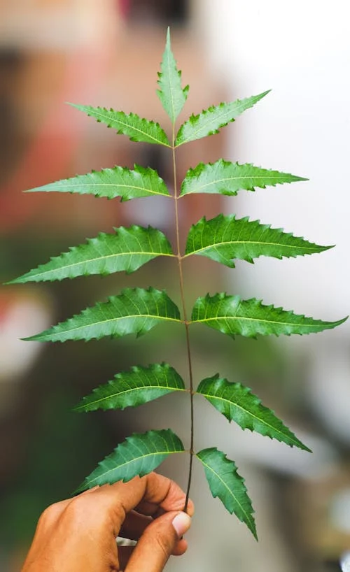

Welcome to the Virtual Herbal Garden वर्चुअल हर्बल गार्डन में आपका स्वागत है ভার্চুয়াল হার্বাল গার্ডেনে স্বাগতম
The AYUSH sector relies heavily on medicinal plants and herbs, which form the backbone of traditional healing practices. Our Virtual Herbal Garden allows you to explore these plants from the comfort of your home. आयुष क्षेत्र औषधीय पौधों और जड़ी-बूटियों पर बहुत अधिक निर्भर करता है, जो पारंपरिक उपचार पद्धतियों की रीढ़ हैं। हमारा वर्चुअल हर्बल गार्डन आपको अपने घर के आराम से इन पौधों को खोजने की अनुमति देता है। আয়ুষ ক্ষেত্র ঔষধি গাছ এবং ভেষজগুলির উপর ব্যাপকভাবে নির্ভর করে, যা ঐতিহ্যবাহী নিরাময় পদ্ধতির মেরুদণ্ড। আমাদের ভার্চুয়াল হার্বাল গার্ডেন আপনাকে আপনার ঘরে বসেই এই উদ্ভিদগুলি অন্বেষণ করার সুযোগ দেয়।
Interactive 3D Models इंटरैक्टिव 3डी मॉडल ইন্টারেক্টিভ 3D মডেল

Tulsi (Ocimum sanctum) तुलसी (ओसिमम सैंक्टम) তুলসী (ওসিমাম স্যাঙ্কটাম)
Common Names:सामान्य नाम:সাধারণ নাম: Holy Basil, Sacred Basilहोली बेसिल, सेक्रेड बेसिलহলি বেসিল, স্যাক্রেড বেসিল
Habitat:प्राकृतिक वास:বাসস্থান: Native to India, commonly found in gardens.भारत का मूल निवासी, आमतौर पर बगीचों में पाया जाता है।ভারতের স্থানীয়, সাধারণত বাগানে পাওয়া যায়।
Medicinal Uses:औषधीय उपयोग:ঔষধি ব্যবহার: Known for its anti-inflammatory, anti-viral, Boosts Immunity and Relieves Respiratory Disorders.अपनी एंटी-इंफ्लेमेटरी, एंटी-वायरल गुणों के लिए जाना जाता है, प्रतिरक्षा बढ़ाता है और श्वसन संबंधी विकारों से राहत देता है।এর প্রদাহ-বিরোধী, ভাইরাস-বিরোধী জন্য পরিচিত, রোগ প্রতিরোধ ক্ষমতা বাড়ায় এবং শ্বাসযন্ত্রের রোগের উপশম করে।
Cultivation:खेती:চাষাবাদ: Prefers warm climates and well-drained soil. Grows well in pots or garden beds.गर्म जलवायु और अच्छी जल निकासी वाली मिट्टी पसंद करता है। गमलों या बगीचे की क्यारियों में अच्छी तरह से बढ़ता है।উষ্ণ জলবায়ু এবং ভাল নিষ্কাশন ব্যবস্থা যুক্ত মাটি পছন্দ করে। টবে বা বাগানের বেডে ভাল জন্মে।
Traditional Practices:पारंपरिक प्रथाएं:ঐতিহ্যগত অনুশীলন:
- Chewing 4–5 fresh Tulsi leaves every morning is a common practice for boosting immunity.प्रतिरक्षा बढ़ाने के लिए हर सुबह 4-5 ताजी तुलसी की पत्तियां चबाना एक आम प्रथा है।রোগ প্রতিরোধ ক্ষমতা বাড়ানোর জন্য প্রতিদিন সকালে ৪-৫টি তাজা তুলসী পাতা চিবানো একটি সাধারণ অভ্যাস।
- Tulsi leaves are often added to tea (Tulsi Chai) to relieve cold, cough, and stress.सर्दी, खांसी और तनाव से राहत के लिए तुलसी की पत्तियों को अक्सर चाय (तुलसी चाय) में मिलाया जाता है।সর্দি, কাশি এবং মানসিক চাপ থেকে মুক্তি পেতে তুলসী পাতা প্রায়শই চায়ে (তুলসী চা) যোগ করা হয়।

Ashwagandha (Withania somnifera) अश्वगंधा (विथानिया सोम्निफेरा) অশ্বগন্ধা (উইথানিয়া সোমনিফেরা)
Common Names:सामान्य नाम:সাধারণ নাম: Indian Ginseng, Winter Cherryइंडियन जिनसेंग, विंटर चेरीইন্ডিয়ান জিনসেং, উইন্টার চেরি
Habitat:प्राकृतिक वास:বাসস্থান: Native to India, grows well in arid regions.भारत का मूल निवासी, शुष्क क्षेत्रों में अच्छी तरह से बढ़ता है।ভারতের স্থানীয়, শুষ্ক অঞ্চলে ভাল জন্মে।
Medicinal Uses:औषधीय उपयोग:ঔষধি ব্যবহার: Adaptogen, helps reduce stress and anxiety, boosts immunity.एडाप्टोजेन, तनाव और चिंता को कम करने में मदद करता है, प्रतिरक्षा बढ़ाता है।অ্যাডাপ্টোজেন, মানসিক চাপ এবং উদ্বেগ কমাতে সাহায্য করে, রোগ প্রতিরোধ ক্ষমতা বাড়ায়।
Cultivation:खेती:চাষাবাদ: Prefers dry, well-drained soil and full sunlight.सूखी, अच्छी जल निकासी वाली मिट्टी और पूरी धूप पसंद करता है।শুষ্ক, ভাল নিষ্কাশন ব্যবস্থা যুক্ত মাটি এবং পূর্ণ সূর্যালোক পছন্দ করে।
Traditional Practices:पारंपरिक प्रथाएं:ঐতিহ্যগত অনুশীলন:
- Traditionally, Ashwagandha root powder is mixed with warm milk or water for strength and stress relief.परंपरागत रूप से, अश्वगंधा जड़ पाउडर को गर्म दूध या पानी में मिलाकर ताकत और तनाव से राहत के लिए सेवन किया जाता है।ঐতিহ্যগতভাবে, শক্তি এবং মানসিক চাপ থেকে মুক্তির জন্য অশ্বগন্ধার মূলের গুঁড়ো গরম দুধ বা জলের সাথে মিশিয়ে খাওয়া হয়।
- Ashwagandha is a key ingredient in many Ayurvedic formulations such as Chyawanprash.अश्वगंधा च्यवनप्राश जैसे कई आयुर्वेदिक फॉर्मूलेशन में एक प्रमुख घटक है।অশ্বগন্ধা চ্যবনপ্রাশের মতো অনেক আয়ুর্বেদিক ফর্মুলেশনের একটি মূল উপাদান।

Turmeric (Curcuma longa) हल्दी (करकुमा लोंगा) হলুদ (কারকুমা লঙ্গা)
Common Names:सामान्य नाम:সাধারণ নাম: Haldi, Indian Saffronहल्दी, इंडियन सैफरनহলদি, ইন্ডিয়ান স্যাফ্রন
Habitat:प्राकृतिक वास:বাসস্থান: Native to Southeast Asia, requires a warm, humid climate.दक्षिण पूर्व एशिया का मूल निवासी, गर्म, आर्द्र जलवायु की आवश्यकता होती है।দক্ষিণ-পূর্ব এশিয়ার স্থানীয়, উষ্ণ, আর্দ্র জলবায়ু প্রয়োজন।
Medicinal Uses:औषधीय उपयोग:ঔষধি ব্যবহার: Anti-inflammatory, antioxidant, used in digestive health, skin health.एंटी-इंफ्लेमेटरी, एंटीऑक्सीडेंट, पाचन स्वास्थ्य, त्वचा स्वास्थ्य में उपयोग किया जाता है।প্রদাহ-বিরোধী, অ্যান্টিঅক্সিডেন্ট, হজম এবং ত্বকের স্বাস্থ্যে ব্যবহৃত হয়।
Cultivation:खेती:চাষাবাদ: Grows in rich, well-drained soil with ample rainfall.समृद्ध, अच्छी जल निकासी वाली मिट्टी में पर्याप्त वर्षा के साथ बढ़ता है।প্রচুর বৃষ্টিপাত সহ সমৃদ্ধ, ভাল নিষ্কাশনযুক্ত মাটিতে জন্মায়।
Traditional Practices:पारंपरिक प्रथाएं:ঐতিহ্যগত অনুশীলন:
- Golden Milk (Haldi Doodh): Warm milk with turmeric for colds, coughs, and better sleep.गोल्डन मिल्क (हल्दी दूध): सर्दी, खांसी और बेहतर नींद के लिए हल्दी वाला गर्म दूध।গোল্ডেন মিল্ক (হলদি দুধ): সর্দি, কাশি এবং ভাল ঘুমের জন্য হলুদের সাথে গরম দুধ।
- Used in Hindu wedding ceremonies, especially the Haldi ceremony, for purification and glow.हिंदू विवाह समारोहों में, विशेष रूप से हल्दी समारोह में, शुद्धिकरण और चमक के लिए उपयोग किया जाता है।হিন্দু বিবাহ অনুষ্ঠানে, বিশেষ করে গায়ে হলুদ অনুষ্ঠানে, শুদ্ধিকরণ এবং উজ্জ্বলতার জন্য ব্যবহৃত হয়।

Cinnamon (Cinnamomum verum) दालचीनी (सिनामोमम वेरम) দারুচিনি (সিনামোমাম ভেরাম)
Common Names:सामान्य नाम:সাধারণ নাম: Ceylon Cinnamon, True Cinnamonसीलोन दालचीनी, सच्ची दालचीनीসিলন দারুচিনি, আসল দারুচিনি
Habitat:प्राकृतिक वास:বাসস্থান: Native to Sri Lanka, thrives in tropical climates.श्रीलंका का मूल निवासी, उष्णकटिबंधीय जलवायु में पनपता है।শ্রীলঙ্কার স্থানীয়, গ্রীষ্মমন্ডলীয় জলবায়ুতে বৃদ্ধি পায়।
Medicinal Uses:औषधीय उपयोग:ঔষধি ব্যবহার: Helps regulate blood sugar levels, has anti-inflammatory properties, digestive aid.रक्त शर्करा के स्तर को नियंत्रित करने में मदद करता है, इसमें एंटी-इंफ्लेमेटरी गुण होते हैं, पाचन में सहायक है।রক্তে শর্করার মাত্রা নিয়ন্ত্রণে সাহায্য করে, প্রদাহ-বিরোধী বৈশিষ্ট্য রয়েছে, হজমে সহায়ক।
Cultivation:खेती:চাষাবাদ: Prefers warm, humid environments with well-drained soil. अच्छी जल निकासी वाली मिट्टी के साथ गर्म, आर्द्र वातावरण पसंद करता है।ভাল নিষ্কাশনযুক্ত মাটি সহ উষ্ণ, আর্দ্র পরিবেশ পছন্দ করে।
Traditional Practices:पारंपरिक प्रथाएं:ঐতিহ্যগত অনুশীলন:
- Known as Tvak in Ayurveda, it is used in digestive tonics and cough syrups.आयुर्वेद में त्वक के रूप में जाना जाता है, इसका उपयोग पाचन टॉनिक और खांसी की दवाई में किया जाता है।আয়ুর্বেদে ত্বক নামে পরিচিত, এটি হজমের টনিক এবং কাশির সিরাপে ব্যবহৃত হয়।
- Cinnamon with honey and ginger is a time-tested home remedy for treating colds.शहद और अदरक के साथ दालचीनी सर्दी के इलाज के लिए एक समय-परीक्षित घरेलू उपचार है।মধু এবং আদার সাথে দারুচিনি সর্দি নিরাময়ের জন্য একটি পরীক্ষিত ঘরোয়া প্রতিকার।

Neem (Azadirachta indica) नीम (अजाडिराक्टा इंडिका) নিম (আজাদিরাচ্টা ইন্ডিকা)
Common Names:सामान्य नाम:সাধারণ নাম: Indian Lilac, Margosaइंडियन लाइलैक, मारगोसाইন্ডিয়ান লিলাক, মারগোসা
Habitat:प्राकृतिक वास:বাসস্থান: Native to the Indian subcontinent, thrives in tropical and semi-tropical regions.भारतीय उपमहाद्वीप का मूल निवासी, उष्णकटिबंधीय और अर्ध-उष्णकटिबंधीय क्षेत्रों में पनपता है।ভারতীয় উপমহাদেশের স্থানীয়, গ্রীষ্মমন্ডলীয় এবং আধা-গ্রীষ্মমন্ডলীয় অঞ্চলে বৃদ্ধি পায়।
Medicinal Uses:औषधीय उपयोग:ঔষধি ব্যবহার: Antibacterial, antifungal, blood purifier, used in skin treatments and dental care.जीवाणुरोधी, एंटिफंगल, रक्त शोधक, त्वचा उपचार और दंत चिकित्सा देखभाल में उपयोग किया जाता है।অ্যান্টিব্যাকটেরিয়াল, অ্যান্টিফাঙ্গাল, রক্ত পরিশোধক, ত্বকের চিকিৎসা এবং দাঁতের যত্নে ব্যবহৃত হয়।
Cultivation:खेती:চাষাবাদ: Prefers sunny environments and well-drained soil; drought-resistant.धूप वाले वातावरण और अच्छी जल निकासी वाली मिट्टी पसंद करता है; सूखा प्रतिरोधी।রৌদ্রোজ্জ্বল পরিবেশ এবং ভাল নিষ্কাশনযুক্ত মাটি পছন্দ করে; খরা-প্রতিরোধী।
Traditional Practices:पारंपरिक प्रथाएं:ঐতিহ্যগত অনুশীলন:
- Neem leaves are boiled and the water is used for bathing to treat skin conditions.नीम की पत्तियों को उबाला जाता है और पानी का उपयोग त्वचा की स्थिति का इलाज करने के लिए स्नान के लिए किया जाता है।নিম পাতা সেদ্ধ করে সেই জল ত্বকের রোগের চিকিৎসার জন্য স্নানের জন্য ব্যবহার করা হয়।
- Neem twigs are used traditionally as toothbrushes (datun) for maintaining oral hygiene.नीम की टहनियों का उपयोग पारंपरिक रूप से मौखिक स्वच्छता बनाए रखने के लिए टूथब्रश (दातुन) के रूप में किया जाता है।মৌখিক স্বাস্থ্যবিধি বজায় রাখার জন্য নিমের ডাল ঐতিহ্যগতভাবে টুথব্রাশ (দাতুন) হিসাবে ব্যবহৃত হয়।

Cardamom (Elettaria cardamomum) इलायची (एलेटारिया कार्डामोमम) এলাচ (এলেটারিয়া কার্ডামোমাম)
Common Names:सामान्य नाम:সাধারণ নাম: True Cardamom, Green Cardamom, Elaichiसच्ची इलायची, हरी इलायचीআসল এলাচ, সবুজ এলাচ
Habitat:प्राकृतिक वास:বাসস্থান: Native to the Western Ghats of India, grows in tropical rainforests.भारत के पश्चिमी घाट का मूल निवासी, उष्णकटिबंधीय वर्षावनों में उगता है।ভারতের পশ্চিমঘাটের স্থানীয়, গ্রীষ্মমন্ডলীয় রেইনফরেস্টে জন্মায়।
Medicinal Uses:औषधीय उपयोग:ঔষধি ব্যবহার: Supports digestive health, has antimicrobial properties, freshens breath.पाचन स्वास्थ्य का समर्थन करता है, इसमें रोगाणुरोधी गुण होते हैं, सांसों को तरोताजा करता है।হজমের স্বাস্থ্য সমর্থন করে, জীবাণু-বিরোধী বৈশিষ্ট্য রয়েছে, নিঃশ্বাস সতেজ করে।
Cultivation:खेती:চাষাবাদ: Requires a moist, tropical climate with well-drained loamy soil and partial shade.अच्छी जल निकासी वाली दोमट मिट्टी और आंशिक छाया के साथ नम, उष्णकटिबंधीय जलवायु की आवश्यकता होती है।ভাল নিষ্কাশনযুক্ত দোআঁশ মাটি এবং আংশিক ছায়া সহ আর্দ্র, গ্রীষ্মমন্ডলীয় জলবায়ু প্রয়োজন।
Traditional Practices:पारंपरिक प्रथाएं:ঐতিহ্যগত অনুশীলন:
- Known as Ela in Ayurveda, it is used to treat digestive issues and bad breath.आयुर्वेद में एला के रूप में जाना जाता है, इसका उपयोग पाचन संबंधी समस्याओं और मुंह की दुर्गंध के इलाज के लिए किया जाता है।আয়ুর্বেদে এলা নামে পরিচিত, এটি হজমের সমস্যা এবং মুখের দুর্গন্ধের চিকিৎসায় ব্যবহৃত হয়।
- Commonly chewed after meals as a mouth freshener and digestive aid.आमतौर पर भोजन के बाद माउथ फ्रेशनर और पाचन सहायक के रूप में चबाया जाता है।সাধারণত খাবারের পর মাউথ ফ্রেশনার এবং হজমে সহায়ক হিসেবে চিবানো হয়।

Clove (Syzygium aromaticum) लौंग (सिज़िजियम एरोमैटिकम) লবঙ্গ (সিজিজিয়াম অ্যারোমেটিকাম)
Common Names:सामान्य नाम:সাধারণ নাম: Clove Buds, Laungलौंग की कलियां, लौंगলবঙ্গ কুঁড়ি, লবঙ্গ
Habitat:प्राकृतिक वास:বাসস্থান: Native to Indonesia, thrives in tropical climates with warm and humid conditions.इंडोनेशिया का मूल निवासी, गर्म और आर्द्र परिस्थितियों के साथ उष्णकटिबंधीय जलवायु में पनपता है।ইন্দোনেশিয়ার স্থানীয়, উষ্ণ এবং আর্দ্র অবস্থা সহ গ্রীষ্মমন্ডলীয় জলবায়ুতে বৃদ্ধি পায়।
Medicinal Uses:औषधीय उपयोग:ঔষধি ব্যবহার: Offers pain relief, antibacterial properties; used for dental issues, digestive ailments.दर्द से राहत, जीवाणुरोधी गुण प्रदान करता है; दंत समस्याओं, पाचन रोगों के लिए उपयोग किया जाता है।ব্যথা উপশম, অ্যান্টিব্যাকটেরিয়াল বৈশিষ্ট্য প্রদান করে; দাঁতের সমস্যা, হজমের রোগের জন্য ব্যবহৃত হয়।
Cultivation:खेती:চাষাবাদ: Requires rich, loamy, well-drained soil and consistent rainfall in tropical regions.उष्णकटिबंधीय क्षेत्रों में समृद्ध, दोमट, अच्छी जल निकासी वाली मिट्टी और लगातार वर्षा की आवश्यकता होती है।গ্রীষ্মমন্ডলীয় অঞ্চলে সমৃদ্ধ, দোআঁশ, ভাল নিষ্কাশনযুক্ত মাটি এবং ধারাবাহিক বৃষ্টিপাত প্রয়োজন।
Traditional Practices:पारंपरिक प्रथाएं:ঐতিহ্যগত অনুশীলন:
- Used in Ayurvedic and Unani systems as a digestive stimulant and oral remedy.आयुर्वेदिक और यूनानी प्रणालियों में पाचन उत्तेजक और मौखिक उपचार के रूप में उपयोग किया जाता है।আয়ুর্বেদিক এবং ইউনানী পদ্ধতিতে হজম উত্তেজক এবং মৌখিক প্রতিকার হিসাবে ব্যবহৃত হয়।
- Clove oil is traditionally applied for toothaches and gum infections.लौंग का तेल पारंपरिक रूप से दांत दर्द और मसूड़ों के संक्रमण के लिए लगाया जाता है।লবঙ্গ তেল ঐতিহ্যগতভাবে দাঁতের ব্যথা এবং মাড়ির সংক্রমণের জন্য প্রয়োগ করা হয়।